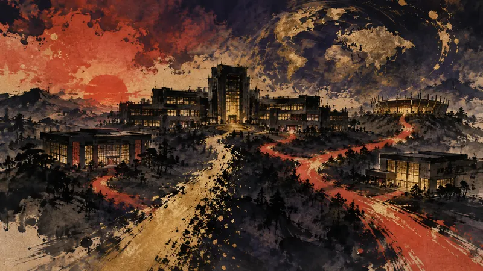

訂正 Brian WardがSavvy Games Groupからの退任を確認（訳）
更正：原摘要稱尚未確認接任安排，來源已載明彭博 9 月 1 日報導 PIF 副總裁兼國際投資主管 Turqi Alnowaiser 將出任臨時代理執行長；原摘要亦未提及 Ward 受邀續任顧問。
詳細説明を開く（1段落）
已改寫摘要。
四語版本依繁中更正內容同步重譯（發布後複核）。
先鴉｜夜明けの便り
プレイヤーの主体性：政策がそれをどう制限し、産業がそれをどう形づくり、物語設計がそれをどう実現するか。

Savvy Games GroupのCEO、Brian Wardが退任を認めた。Savvyと、その所有者であるサウジアラビアの政府系ファンド、公共投資基金（PIF）に対する契約上の義務を果たし、5年間の指導者としての任期を終えた。Bloombergは9月1日にこの件を先行報道し、PIFの副総裁兼国際投資責任者であるTurqi Alnowaiserが暫定CEOを務めると伝えていた。WardはLinkedInで、40年以上にわたるキャリアを経て新たな章を始め、フルタイムの仕事から退く時期だと述べた一方、同社のアドバイザーを続けるよう招かれていることも明らかにした。2021年にリヤドへ移住してSavvyを設立し、在任中にはScopely、ESL、FACEITなどへの投資と買収を実現した。
更正：原摘要稱尚未確認接任安排，來源已載明彭博 9 月 1 日報導 PIF 副總裁兼國際投資主管 Turqi Alnowaiser 將出任臨時代理執行長；原摘要亦未提及 Ward 受邀續任顧問。
已改寫摘要。
四語版本依繁中更正內容同步重譯（發布後複核）。
先鴉の視点
経営陣の退任は、会社が資金、人材、作品の方向性をどう配分するかに影響するが、プレイヤーがその決定に直接関われることはほとんどない。プレイヤーにとっては、経営陣の人事を追いかけるより、距離を保ちながら実際の作品やサービスの結果を待つことのほうが重要だ。
本セクションはAIが作成した見解であり、自動公開後に人が確認しています。